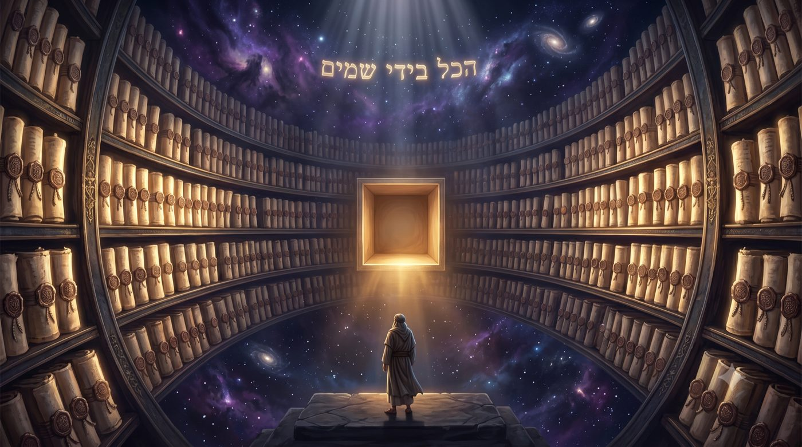
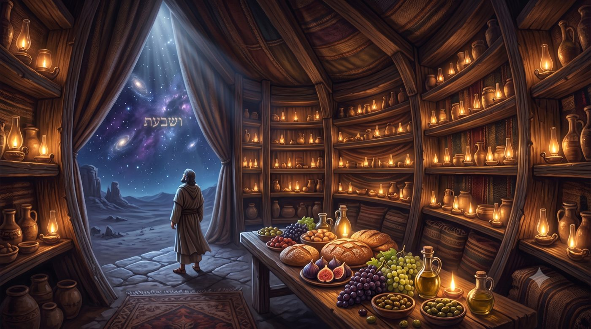

Que nous demande-t-on sinon de Le Craindre ?
Ce que le Ciel réclame vraiment de nous tient en un seul mot, et ce mot désigne à la fois le geste le plus accessible de notre vie intérieure et le seul territoire que le décret céleste ne franchit jamais.
Moché s'adresse une dernière fois au peuple, à quelques semaines de sa mort, après quarante années de désert, après le veau d'or, après les explorateurs, après Kora'h, après les eaux de Meriva. Il a tout vu et connaît chaque faiblesse de ceux qui l'écoutent. Et voici comment il résume la totalité de ce que le Ciel attend d'eux : וְעַתָּה יִשְׂרָאֵל מָה ה' אֱ-לֹהֶיךָ שֹׁאֵל מֵעִמָּךְ כִּי אִם לְיִרְאָה (Veata Israël, ma Hachem Elokékha shoèl méimakh, ki im leyira),
« Et maintenant, Israël, que demande de toi Hachem ton D.ieu, rien sinon de Le craindre ».
La phrase contient deux mots qui, ensemble, produisent quelque chose d'étrange. Le premier est מָה (ma), « que », « quoi ». Le second est l'expression כִּי אִם (ki im), « rien sinon », « si ce n'est ». Mises bout à bout, ces deux tournures forment le langage ordinaire de la modestie. On dit à quelqu'un « que te demande-t-on, sinon ceci ? » lorsque l'on veut souligner que la demande est légère, presque rien, une formalité qu'il serait déraisonnable de refuser, nous emmenons à constater que Moché présente l'exigence de la crainte du Ciel comme une petite chose.
Or, ce qu'il place dans cette petite chose n'a rien de léger. La יִרְאָה (yira), la crainte du Ciel, traverse toute la Torah. Le verset le plus dense du livre de Kohélet la désigne comme la conclusion de tout : אֶת הָאֱ-לֹהִים יְרָא (èt haElokim yera), « crains D.ieu ». Le prophète Yeshayahou l'appelle le trésor de Hachem. Nos maîtres en ont fait la condition de la sagesse elle-même, au point que la Michna dans les Maximes des Pères tranche sans détour : אִם אֵין יִרְאָה אֵין חָכְמָה (im éin yira éin 'hokhma), « s'il n'y a pas de crainte, il n'y a pas de sagesse ». Demander la crainte du Ciel, c'est demander la clé de voûte du système relationnel entre D.ieu et l’homme.
L'anomalie est là, dans l'écart entre le ton et le contenu. Moché parle de la crainte comme on parle d'un petit service, et la chose qu'il désigne contient pourtant l'édifice entier du service de D.ieu, de la avodat hachem.
Avec l'aide du Ciel et de nos maîtres, nous verrons d'abord comment le Talmud formule le paradoxe et par quelle image il le résout, puis nous distinguerons les niveaux de crainte que la tradition a soigneusement séparés, avant de découvrir pourquoi ce domaine précis a été soustrait au décret céleste. Nous chercherons ensuite ce qui rend cette exigence à la fois si accessible et si difficile à tenir, puis nous entrerons dans la dimension mystique de la crainte, où elle apparaît comme la faculté qui fabrique le réceptacle capable de porter la lumière. Nous reviendrons enfin sur le mot מָה lui-même, dont un maître de Berditchev a montré qu'il désignait la stature même de Moché.
• La crainte, une demande immense et minuscule
• Oui, pour Moché, la crainte c'est une petite chose
• Deux craintes que tout sépare
• La crainte : le seul territoire que le décret ne franchit pas
• Pourquoi la crainte est légère et vertigineuse à la fois
• La crainte fabrique le vase
• Le מָה de Moché, ou la crainte née de l'effacement
• Le jour où craindre deviendra une évidence
Le traité Bera'hot rapporte au nom de Rabbi 'Hanina une règle de service divin en s’appuyant précisemment sur l’injonction de Moché : הַכֹּל בִּידֵי שָׁמַיִם חוּץ מִיִּרְאַת שָׁמַיִם (hakol bidé shamayim 'houts miyirat shamayim), « tout est aux mains du Ciel, hormis la crainte du Ciel ».
C'est alors que, comme à l'accoutumée, la Guemara interrompt son propre raisonnement par une objection :אַטּוּ יִרְאַת שָׁמַיִם מִילְּתָא זוּטַרְתָּא הִיא (atou yirat shamayim milta zoutarta hi),
« la crainte du Ciel serait donc une petite chose ? ». Le mot araméen זוּטַרְתָּא signifie exactement cela, une chose menue, un objet de peu de poids. L'objection vise le ton du verset : la tournure « que… sinon » est celle de la petite demande, et le Talmud refuse de la laisser passer.
Pour appuyer son objection, il convoque une seconde parole du même Rabbi 'Hanina, transmise au nom de Rabbi Shimon bar Yo'haï, et cette parole écrase la première : אֵין לוֹ לְהַקָּדוֹשׁ בָּרוּךְ הוּא בְּבֵית גְּנָזָיו אֶלָּא אוֹצָר שֶׁל יִרְאַת שָׁמַיִם (éin lo leHakadoch baroukh Hou bevéit guenazav èla otsar chèl yirat shamayim), « le Saint béni soit-Il n'a dans Ses trésors que le trésor de la crainte du Ciel », selon le verset de Yeshayahou, יִרְאַת ה' הִיא אוֹצָרוֹ (yirat Hachem hi otsaro). Voilà l'unique bien que le Créateur conserve dans Sa chambre forte. Et l'on voudrait nous faire croire que ce bien coûte peu ?
La réponse de la Guemara tient en trois mots : אִין, לְגַבֵּי מֹשֶׁה מִילְּתָא זוּטַרְתָּא הִיא (in, legabé Moché milta zoutarta hi), « oui, pour Moché c'est une petite chose ». La difficulté ne portait pas sur la crainte du Ciel mais sur celui qui parle. Moché emploie le langage de la modestie parce qu'il décrit une réalité qu'il occupe lui-même pleinement, étant totalement investi de la crainte du Ciel, cette demande paraît effectivement modeste.
On pourrait croire la question réglée par cette élégance. Elle ne l'est pas, et le Talmud le sait, puisqu'il ajoute immédiatement une parabole extraordinaire. Rabbi 'Hanina l'énonce ainsi : מָשָׁל לְאָדָם שֶׁמְּבַקְשִׁים מִמֶּנּוּ כְּלִי גָּדוֹל וְיֵשׁ לוֹ, דּוֹמֶה עָלָיו כִּכְלִי קָטָן; קָטָן וְאֵין לוֹ, דּוֹמֶה עָלָיו כִּכְלִי גָּדוֹל (machal leadam chèmevakchim miménou keli gadol veyèch lo, domé alav kikhli katan; katan veéin lo, domé alav kikhli gadol). « Une parabole. On réclame à un homme un grand récipient et il le possède : le récipient lui paraît petit. On lui en réclame un petit et il ne le possède pas : celui-ci lui paraît grand. »
Le mot que le Talmud choisit pour construire sa parabole est כְּלִי (keli), le récipient, le vase, le réceptacle. Nos maîtres ne disent pas « une charge lourde ou légère », ni « une tâche facile ou difficile ». Ils invoquent un vase que l'on possède ou que l'on ne possède pas. La question de la crainte du Ciel est posée, dès le Talmud, en termes de contenant.
La demande divine n'a pas de taille propre ; elle prend la dimension du vase que nous avons, ou que nous n'avons pas encore façonné.
Le mot יִרְאָה Yira, la Crainte, souffre en français d'une traduction qui l'appauvrit. Nous disons « crainte », et l'esprit va aussitôt vers la peur, vers le recul de celui qui redoute un coup.
Le Ramhal consacre à cette distinction un chapitre entier de son Messilat Yesharim à la définition de la crainte. La première est la יִרְאַת הָעוֹנֶשׁ (yirat haonèch), la crainte du châtiment, celle de l'homme qui redoute la sanction de sa faute. La deuxième est la יִרְאַת הָרוֹמְמוּת (yirat harommemout), la crainte de la Majesté, ce saisissement devant une grandeur qui excède l'esprit. La troisième est la יִרְאַת הַחֵטְא (yirat ha'hèt), la crainte de la faute, qui ne redoute plus la punition mais l'offense elle-même. Le Ramhal ne compte que deux genres véritables, parce que la crainte de la faute ne forme pas une catégorie autonome. Elle est une branche de la crainte de la Majesté, sa forme appliquée au moment de l'acte.
Mais le Ramhal ne se contente pas de les distinguer. Il juge la crainte du châtiment avec sévérité : cette crainte, écrit-il, ne convient qu'aux gens simples et à ceux dont l'intelligence est légère, et elle demeure étrangère aux sages comme aux hommes de discernement. La formule est rude mais elle mérite d'être comprise. Celui qui s'abstient d'une faute par peur d'en payer le prix a organisé sa vie autour de lui-même. Le centre de son calcul reste sa propre sécurité. Le Ciel y figure comme une autorité susceptible de nuire, ce qui revient à réduire l'infini aux dimensions d'un tribunal.
La crainte de la Majesté fonctionne selon un tout autre ressort. Elle ne redoute aucune sanction. Elle naît de la conscience d'une présence dont la grandeur excède ce que l'esprit peut contenir, et cette conscience produit un mouvement de retrait qui ressemble au silence plutôt qu'à la peur. Le Rambam décrit ce mouvement dans les Fondements de la Torah : l'homme contemple les œuvres du Créateur, il en reçoit d'abord l'amour, puis il se retourne vers lui-même et se découvre בְּרִיָּה קְטַנָּה שְׁפָלָה (beriya ketana chefala), une créature petite et modeste. Alors, écrit le Rambam, נִרְתָּע לַאֲחוֹרָיו וְיִירָא (nirta laa'horav veyira), il recule et il craint.
Le Zohar, dans son introduction, établit une échelle voisine et l'énonce en trois degrés. Il y a celui qui craint pour ses enfants, pour son corps ou pour son argent. Il y a celui qui craint le châtiment de ce monde ou celui du monde à venir. Et il y a la crainte véritable, que le texte définit ainsi : craindre son Maître בְּגִין דְּאִיהוּ רַב וְשַׁלִּיט, עִיקָּרָא וְשׇׁרְשָׁא דְּכׇל עָלְמִין (beguin deihou rav vechalit, ikara vechorcha dekhol almin), parce qu'Il est grand et souverain, la racine et le principe de tous les mondes. Rabbi Eliyahou de Vidas a jugé cette hiérarchie si fondamentale qu'il a ouvert son Reshit 'Hokhma par un Portail de la Crainte, placé avant celui de l'amour, avant celui du repentir, avant celui de la sainteté. L'ordre de ces portails contient un enseignement.
On aurait pu croire que la crainte couronne un parcours spirituel, qu'elle en est le fruit tardif. Nos maîtres la placent à l'entrée, comme le seuil que l'on franchit avant de pouvoir recevoir quoi que ce soit d'autre.
La crainte du châtiment protège l'homme de lui-même ; la crainte de la Majesté le prépare à recevoir ce qui le dépasse.

La règle de Rabbi 'Hanina que nous avons lue au début de la discussion de Berah’ot,הַכֹּל בִּידֵי שָׁמַיִם חוּץ מִיִּרְאַת שָׁמַיִם, « tout est aux mains du Ciel, hormis la crainte du Ciel », ne concerne pas seulement la crainte. Elle situe la place exacte de notre liberté.
Mesurons l'étendue de ce que recouvre le mot « tout ». Le traité Nida décrit l'ange préposé à la conception, dont le nom est Laïla, qui prend la goutte dont naîtra un homme, la présente devant le Saint béni soit-Il et pose les questions de son avenir. Cet homme sera-t-il fort ou faible, sage ou simple, riche ou pauvre. Le Talmud relève alors la seule question que l'ange ne pose jamais : רָשָׁע אוֹ צַדִּיק לֹא קָאָמַר (racha o tsadik lo kaamar), « impie ou juste, il ne le dit pas ».
Le Talmud donne lui-même la raison de ce silence, et il la donne en citant la parole de Rabbi 'Hanina que nous venons de lire, כִּדְרַבִּי חֲנִינָא (kidRabbi 'Hanina), « conformément à Rabbi 'Hanina », c'est-à-dire que tout est aux mains du Ciel hormis la crainte du Ciel. Si l'ange ne pose pas cette question, c'est donc qu'aucune réponse ne l'attend en haut. Le caractère de l'homme, sa force, sa fortune, son intelligence se décident devant le Trône. Sa droiture, elle, ne s'y décide pas. Elle se décide en bas, et par lui seul.
La conséquence est saisissante. Tout ce dont nous nous plaignons habituellement, la santé, l'intelligence, les moyens matériels, le tempérament, le siècle où nous sommes nés, la famille qui nous a formés, appartient au registre de ce qui a été décidé sans nous. Une seule zone reste ouverte, et elle porte un nom : la crainte du Ciel.
On comprend mieux, dès lors, pourquoi Moché la nomme au moment de conclure son enseignement. Il ne demande pas au peuple ce qui ne dépend pas de lui. Il désigne exactement le point où sa liberté s'exerce encore. Le maître qui prend congé ne réclame pas des résultats, il indique le levier pour les obtenir.
Nous plaçons spontanément notre liberté dans l'action, dans le choix que nous posons, dans le geste que nous accomplissons. Nos maîtres la placent plus haut, dans la disposition mentale intérieure qui précède le geste. Deux hommes accomplissent le même acte, et l'un se tient devant le Ciel tandis que l'autre remplit une obligation. Rien ne les distingue de l'extérieur. Tout les sépare dans le seul registre où le décret n'a pas de prise.
Les sages enseignent au traité Nazir, au nom de Rabbi Yo'hanan, à propos du verset כִּי יְשָׁרִים דַּרְכֵי ה' וְצַדִּיקִים יֵלְכוּ בָם וּפֹשְׁעִים יִכָּשְׁלוּ בָם (ki yesharim darkhé Hachem, vetsadikim yelkhou vam oufoch'im yikachelou vam), « car les voies de Hachem sont droites : les justes y marchent et les pécheurs y trébuchent », une parabole qui dit exactement cela : מָשָׁל לִשְׁנֵי בְּנֵי אָדָם שֶׁצָּלוּ אֶת פִּסְחֵיהֶן, אֶחָד אֲכָלוֹ לְשׁוּם מִצְוָה, וְאֶחָד אֲכָלוֹ לְשׁוּם אֲכִילָה גַּסָּה (machal lichné bené adam chètsalou èt pis'héhèn, è'had akhalo lechoum mitsva, veè'had akhalo lechoum akhila gassa), « deux hommes ont rôti leur agneau pascal : l'un l'a mangé au nom de la mitsva, l'autre par simple voracité ». Le même agneau, le même soir, le même geste, et aucun témoin n'aurait su les départager. Le premier marche dans les voies de Hachem ; pour le second, la mitsva elle-même est devenue l'objet de sa chute.
Le trésor dont parlait Rabbi Shimon bar Yo'haï trouve ici son explication. Si le Créateur ne conserve dans Ses réserves que la crainte du Ciel, c’est parce qu’elle demeure le seul bien qui ne puisse être fabriqué ailleurs qu'en nous. Tout le reste, Il le donne, celui-ci, Il l'attend.
Le Ciel décide de tout ce que nous sommes, sauf de la manière dont nous nous tenons mentalement devant Lui.

Reste la question de l'homme ordinaire. Pourquoi la crainte du Ciel nous apparaît-elle si lourde, alors que le verset la présente comme une petite chose ?
Commençons par tout ce qui la rend effectivement légère. Elle ne demande aucun instrument. Elle n'exige ni argent, ni force physique, ni mémoire exercée, ni disponibilité de temps. Un homme malade dans son lit peut l'exercer aussi complètement qu'un homme en pleine santé. Elle ne réclame aucune autorisation extérieure, aucun apprentissage préalable, aucun lieu particulier. Elle est accessible à l'instant même où on y pense, et elle le redevient à l'instant suivant si on l'a laissée s'échapper. Aucune autre exigence de la Torah ne présente cette combinaison de gratuité et de disponibilité permanente. De ce point de vue, Moché a raison, et son verset ne comporte aucune exagération : ce qui vous est demandé ne coûte rien.
Voici maintenant ce qui la rend vertigineuse. Elle ne s'appuie sur rien de visible. Toutes les autres exigences se posent sur un objet, sur un rite, sur une matière que l'on peut manipuler et dont l'accomplissement se constate. On sait si l'on a mangé de la matsa, écouté le chofar, donné la tsedaka... La crainte du Ciel se joue dans un registre où aucune vérification extérieure n'est possible, y compris pour soi-même, puisque nous sommes juges et parties dans l'appréciation de notre propre intériorité. Elle se pratique sans témoin et sans preuve.
À cela s'ajoute le fait qu'elle demande de tenir compte d'une présence qui ne se manifeste pas. Le monde continue de fonctionner exactement de la même façon selon que nous la reconnaissons ou que nous l'ignorons. Aucune sanction immédiate ne vient corriger l'oubli. Aucun signal ne vient récompenser l'attention. Voilà pourquoi la chose la plus disponible du monde est aussi la plus rarement tenue.
La parachat Ekev décrit d'ailleurs, quelques lignes plus loin, la situation qui rend cette tenue le plus difficile. Elle ne parle ni de persécution ni de misère. Elle parle de satiété. וְאָכַלְתָּ וְשָׂבָעְתָּ (veakhalta vesavata), « tu mangeras et tu seras rassasié », et c'est là, précisément là, que le texte place l'avertissement de l'oubli. L'homme qui manque lève naturellement les yeux. L'homme qui a reçu ce qu'il demandait se retrouve devant un choix qu'aucune circonstance ne l'oblige plus à faire. La crainte du Ciel devient alors le seul acte entièrement gratuit qui lui reste, au sens où plus rien dans sa situation ne la lui impose.
Nous touchons ici à la raison profonde pour laquelle notre verset associe la crainte à la marche dans les voies divines, à l'amour et au service. Moché ne juxtapose pas quatre demandes. Il décrit un seder, l’ordre des choses. La crainte vient d'abord, parce qu'elle est ce qui rend les autres possibles. Un amour qui ne serait précédé d'aucune retenue se confondrait vite avec l'expansion de soi. Un service qui ne serait précédé d'aucune crainte deviendrait rapidement une affaire de goût personnel.
Ce qui ne coûte rien à faire est justement ce que rien n'oblige à faire, et c'est en cela que la crainte du Ciel demande davantage qu'un effort.
La tradition mystique reprend l'image talmudique du récipient et en fait une mécanique complète. Il faut avancer ici avec précaution, en distinguant ce que les textes disent effectivement de ce que des générations ultérieures en ont tiré.
Le Ramak, dans son Pardès Rimonim, rattache la crainte à un attribut divin précis. Il écrit que la crainte, prise sans qualificatif, relève de la גְּבוּרָה (guevoura), la rigueur, parce que c'est de là que sa racine provient. Puis il ajoute qu'il existe une crainte plus haute, qu'il nomme le trésor de la sagesse, et qu'il rattache à la בִּינָה (bina), l'intelligence. Les deux niveaux que nous avons rencontrés chez le Ramhal et dans le Zohar reçoivent ainsi une localisation dans la structure des attributs divins. Notons au passage que ce rattachement appartient au Ramak, et que le passage du Zohar sur les trois craintes ne comporte pour sa part aucune assignation de ce genre.
La guevoura mérite qu'on la définisse correctement, car le mot « rigueur » évoque en français une sévérité qui manque l'essentiel. Cet attribut désigne la faculté de limiter, de retenir, de tracer une frontière. Il est l'exact contraire de l'expansion. Là où le חֶסֶד (hessed) donne sans mesure et se répand, la guevoura arrête, contient et délimite. Rattacher la crainte à la guevoura revient donc à dire ceci : craindre, c'est exercer en soi la faculté de se contenir, de reconnaître une limite, de ne pas occuper tout l'espace.
C'est ici que l'enseignement du Ari Z"L vient donner à cette équivalence entre la crainte et la faculté de limiter sa profondeur maximale. Le Etz Haim décrit le monde antérieur au nôtre, celui que la tradition appelle le monde du תֹּהוּ (tohou), et raconte comment ses vases se sont brisés. La cause, le texte la répète sous plusieurs formulations, et je cite l'une d'elles telle qu'elle figure au Portail des Points : לֹא הָיָה יָכוֹל הַכְּלִי לִסְבּוֹל אֶת כּוּלָּם וְנִשְׁבַּר (lo haya yakhol hakeli lisbol èt koulam venichbar), « le vase ne pouvait pas les supporter tous, et il se brisa ». La lumière n'était pas en défaut. Elle était même parfaite. Ce qui manquait se trouvait du côté du contenant.
Le Portail de la Brisure des Vases répète la même mécanique, et le Portail des Généralités décrit les rois du monde du tohou qui sont morts שֶׁלֹּא הָיָה בָּהֶם יְכוֹלֶת לִסְבּוֹל הָאוֹר (chèlo haya bahèm yekholèt lisbol haor), parce qu'ils n'avaient pas la capacité de supporter la lumière. Une réserve d'exactitude s'impose ici. Les textes n'écrivent pas que ces vases manquaient de rigueur ou de limite ; ils décrivent des points séparés, sortis sans liaison ni inclusion mutuelle. Retenons donc ce que le Ari Z"L affirme, à savoir qu'une lumière excédant la capacité de son vase le détruit, sans lui prêter une formulation qu'il n'emploie pas.
Le passage décisif se trouve dans le Portail de la Brisure des Vases, lorsque le texte explique comment cette catastrophe se répare : הִתְעַלְּמוּת הָאוֹר וְכִיסּוּיוֹ הוּא מְצִיאוּת תִּיקּוּנוֹ (hitalmout haor vekhisouyo hou metsiout tikouno), « la dissimulation de la lumière et son voilement constituent la réalité de sa réparation ». Le texte poursuit en donnant la raison : כִּי עַל יְדֵי כָּךְ יֵשׁ כֹּחַ בַּכְּלִי לִסְבּוֹל הָאוֹר (ki al yedé kakh yèch koa'h bakeli lisbol haor), car par ce moyen le vase reçoit la force de supporter la lumière.
Voilà l'enseignement central. Le voilement de la lumière n'est pas une punition ni un appauvrissement. Il est le moyen par lequel une lumière devient supportable. Appliquons ce principe à la crainte, telle que le Ramak l'a rattachée à la faculté de limiter, et l'ensemble se met en place. La crainte du Ciel est le geste par lequel l'homme se contracte, reconnaît une frontière et cesse d'occuper toute la place. Ce geste ne le diminue pas. Il le rend capable de porter.
L'ordre du verset apparaît alors sous un jour nouveau. Craindre, puis marcher, puis aimer, puis servir. L'amour est la lumière et il descend en abondance, sans que nul n'ait à le mériter. La crainte est le vase, et c'est la seule pièce que le Ciel ne fabrique pas à notre place. Le verset ne demande pas l'amour comme on demande un effort, il le mentionne comme un contenu. Il demande la crainte comme on demande un contenant.
Le lecteur qui a suivi le cours de la parachat Vaet'hanan reconnaîtra le mouvement. Nous y avions vu que prier ne modifie pas le Ciel mais élargit le priant, qui devient un meilleur réceptacle pour ce qui l'attend déjà. Il restait une question en suspens dans cet enseignement : par quelle faculté précise cet élargissement s'opère-t-il ? Ekev répond. Cette faculté porte un nom, et ce nom est la crainte.
La lumière ne manque jamais ; ce qui manque, c'est la contraction intérieure capable de la contenir sans se rompre.
Il nous reste à examiner le premier mot de notre verset, celui que nous avons laissé de côté depuis le début. מָה ה' אֱ-לֹהֶיךָ שֹׁאֵל מֵעִמָּךְ. Nous l'avons lu comme un interrogatif de modestie, « que demande-t-Il, sinon ceci ». La lecture est correcte. Une seconde lecture existe pourtant, et elle change tout.
Ce même mot מָה apparaît dans un passage du livre de Chemot où il occupe une autre fonction. Le peuple murmure dans le désert, la faim le tenaille, et Moché et Aharon lui répondent ensemble : וְנַחְנוּ מָה כִּי תַלִּינוּ עָלֵינוּ (vena'hnou ma ki talinou aléinou), « et nous, que sommes-nous, pour que vous murmuriez contre nous ». Le verset suivant reprend la même formule, comme pour s'assurer qu'elle sera retenue. Ici, מָה ne pose plus de question. Il énonce une identité, ou plus exactement l'absence d'identité propre.
Le Talmud a mesuré la portée de cette phrase. Dans le traité 'Houlin, nos maîtres comparent les formules d'effacement des grandes figures de la Torah et concluent que ce qui est dit de Moché et Aharon dépasse ce qui est dit d'Avraham. Avraham déclarait וְאָנֹכִי עָפָר וָאֵפֶר (veanokhi afar vaéfèr), « et moi je suis poussière et cendre ». C'est déjà une parole d'humilité considérable, mais elle conserve un sujet qui parle de lui-même et se compare à quelque chose. Moché et Aharon disent וְנַחְנוּ מָה, et ne se comparent plus à rien du tout. La poussière est encore une matière. Le מָה ne l'est pas.
Rabbi Levi Its'hak de Berditchev, l’auteur du Kedouchat Levi, a rapproché ces deux מָה dans son commentaire sur notre paracha. Il lit notre verset ainsi : בְּחִינַת מַ"ה הוּא שׁוֹאֵל מֵעִמָּךְ (be'hinat ma hou choèl méimakh), « c'est la dimension du מָה qu'Il demande de toi ». Le Ciel ne demande pas seulement que tu craignes. Il demande que tu accèdes à cet état où l'on peut dire וְנַחְנוּ מָה, l'état d'effacement qui était celui de Moché, et le Kedouchat Levi précise que cette dimension correspond à la crainte supérieure.
L'enseignement se poursuit par une remarque d'une grande justesse pédagogique. Le maître ajoute que l'on n'atteint cet état qu'à une condition, et que cette condition est de commencer par la crainte inférieure, celle de la faute, laquelle constitue סוּלָּם (soulam), une échelle permettant de monter vers la crainte supérieure.
Nous pouvons désormais relire la réponse du Talmud. Pourquoi la crainte du Ciel est-elle une petite chose pour Moché ? Non pas parce que Moché serait plus fort que nous, ni parce qu'il aurait davantage travaillé, bien que ces deux choses soient vraies. La raison est plus structurelle. Un homme qui a atteint le וְנַחְנוּ מָה n'a plus rien à contracter, puisqu'il n'occupe plus de place. Le vase, chez lui, est déjà fabriqué : on lui réclame un grand récipient et il le possède.
Une dernière observation sur le mot מָה. La tradition massorétique le marque, dans notre verset, d'un accent disjonctif qui l'isole du reste de la phrase. La lecture liturgique elle-même détache ce mot, comme si le texte invitait à s'arrêter dessus avant de poursuivre comme pour nous indiquer qu’il y a là plus de sens qu’il n’y parait.
Ce que le Ciel demande porte le même nom que ce que Moché disait de lui-même, et la crainte véritable commence là où l'on cesse d'être quelque chose.
Nous avons décrit la crainte comme un effort, et cette description vaut pour le temps que nous habitons : se contracter devant un invisible, fabriquer un vase sans jamais voir la lumière qu'il servira à contenir. C'est un travail dans l'obscurité, et le mérite de nos générations tient précisément à cette obscurité. Le prophète Yeshayahou annonce pourtant un temps où la condition changera : כִּי מָלְאָה הָאָרֶץ דֵּעָה אֶת ה' כַּמַּיִם לַיָּם מְכַסִּים (ki mal'a haarets déa èt Hachem kamayim layam mekhassim), « car la terre sera remplie de la connaissance de Hachem comme les eaux recouvrent le fond de la mer ».
Considérons ce que devient la crainte dans un tel monde. Elle cesse d'être un effort, puisque l'effort provenait entièrement du fait que la présence restait cachée. Elle devient une évidence, de la même manière que nul n'a besoin de se forcer à reconnaître le soleil lorsqu'il est midi. Le voilement dont parlait le Etz Haim aura rempli son office : il aura permis aux vases de se construire, et une fois les vases construits, il n'aura plus lieu d'être. Alors la lumière pourra se donner sans mesure, sans que rien ne se brise.
Ce que Moché disait avec une aisance qui a surpris le Talmud deviendra la manière ordinaire de parler de chaque homme. La crainte du Ciel sera pour tous une petite chose, non parce qu'elle aura perdu de sa hauteur, mais parce que chacun possédera le récipient qu'on lui réclame. La parabole de Rabbi 'Hanina cessera d'avoir deux versants. Il ne restera que le premier, celui de l'homme à qui l'on demande un grand vase et qui l'a déjà.
Chaque geste posé aujourd'hui dans l'obscurité travaille à la prépération de ce jour-là. Celui qui reconnaît une limite là où rien ne l'y oblige, qui se tient droit devant une présence dont il ne reçoit aucun signe, fabrique une part de ce vase, pour lui-même et pour le monde. Il ne verra peut-être pas la lumière qu'il rend possible mais il sait qu’Elle viendra.
| וְעַתָּה יִשְׂרָאֵל מָה ה' אֱ-לֹהֶיךָ שֹׁאֵל מֵעִמָּךְ כִּי אִם לְיִרְאָה אֶת ה' אֱ-לֹהֶיךָ | Et maintenant, Israël, que demande de toi Hachem ton D.ieu, rien sinon de craindre Hachem ton D.ieu |
Devarim 10:12
Chabbat Chalom !
Par B.A., à Saint-Mandé, 3 Av 5786 / 25 juillet 2026
Yehi Ratson que nous soit accordée la force de nous contracter là où rien ne nous y oblige, et de reconnaître une limite au moment même où tout nous invite à occuper toute la place.
Que nous méritions de dire, ne serait-ce qu'un instant et à notre mesure, ce que Moché et Aharon ont dit ensemble, et que ce מָה ouvre en nous l'espace où le Ciel attend de déposer ce qu'Il retient depuis toujours.
| Torah | Talmud |
| Devarim 10:12, le verset socle, que demande Hachem sinon de Le craindre ; 8:10, tu mangeras et tu seras rassasié ; Chemot 16:7-8, et nous, que sommes-nous ; Beréchit 18:27, je suis poussière et cendre ; Yeshayahou 33:6, la crainte de Hachem est Son trésor ; 11:9, la terre remplie de la connaissance de Hachem ; Kohélet 12:13, crains D.ieu | Bera'hot 33b, tout est aux mains du Ciel hormis la crainte du Ciel, l'objection sur la petite chose, la réponse pour Moché et la parabole du récipient ; Meguila 25a, reprise du principe ; Nida 16b, l'ange et la goutte, tout est décrété sauf juste ou impie ; Nazir 23a et Horayot 10b, Rabbi Yo'hanan, les deux hommes et l'agneau pascal ; 'Houlin 89a, la grandeur du vena'hnou ma de Moché et Aharon |
| Michna | Rishonim |
| Avot 3:17, s'il n'y a pas de crainte il n'y a pas de sagesse | Rambam, Michné Torah, Yessodei haTorah 2:1-2, l'amour puis le recul devant la grandeur, la créature petite et modeste ; Sefer haMitsvot, commandement positif 4, la crainte définie comme crainte du châtiment |
| Mystique | Hassidout |
| Zohar I, 11a-b, introduction, les trois degrés de la crainte et la crainte véritable devant la racine de tous les mondes ; Ramak, Pardès Rimonim, Portail des dénominations 23, la crainte rattachée à la guevoura et la crainte supérieure à la bina ; Reshit 'Hokhma de Rabbi Eliyahou de Vidas, Portail de la Crainte, placé en tête de l'ouvrage ; Ari Z"L, Etz Haim, Portail des Points 8:4-5 et Portail de la Brisure des Vases 9:2-3, le vase qui ne peut supporter la lumière et le voilement comme réparation ; Portail des Généralités 1, les rois qui n'avaient pas la capacité de supporter la lumière | Ramhal, Messilat Yesharim 24, les genres de crainte sont deux qui en font trois, crainte du châtiment, crainte de la Majesté et crainte de la faute comme branche de la seconde ; 25, la voie d'acquisition de la crainte ; Kedouchat Levi, Devarim, Ekev, la dimension du ma demandée, le vena'hnou ma comme crainte supérieure et la crainte inférieure comme échelle |